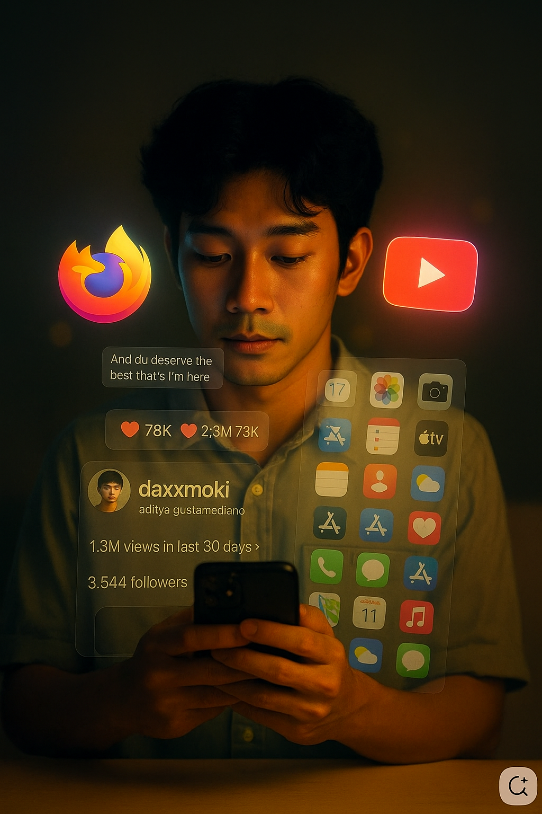

🔥잠, 위생, 일을 뺀 여가시간의 93%를 Display를 보며 보내는 인간들🔥
🟥 유튜브없던 시절을 생각해보자. 내가 유튜브에서 보는 영상 대부분을 안보고 살았다. 내가 보는 영상 중 내 인생에 도움되는 영상이 정말 몇개나 있을까?
🟥 인생에서 재미, Entertainment는 뺄 수 없지. 인생은 즐기며 살아야하는게 맞아. 근데 지금은 그게 아니잖아. 공허함만 남는 유튜브시청은 잠시 멈춰야할 시점이 아닐까? 차라리 산책, 하이킹, 수영, 친구관계 등 다른 재미있는 활동을 즐겨보자. 유튜브는 잠시 쉬어가자. 정말 6-7년 가까이 유튜브를 정말 많이 봤다.
🟥 새로운 삶의 방식